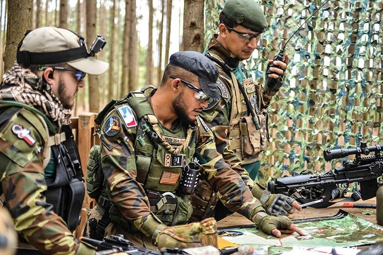

O que é airsoft?
Airsoft é um jogo desportivo onde os jogadores participam de simulações de operações policiais, militares ou de mera recreação com armas de pressão que atiram projéteis plásticos não letais, utilizando-se frequentemente de tácticas militares. É praticado em ambientes fechados ou ao ar livre, frequentemente em áreas de grande extensão.
